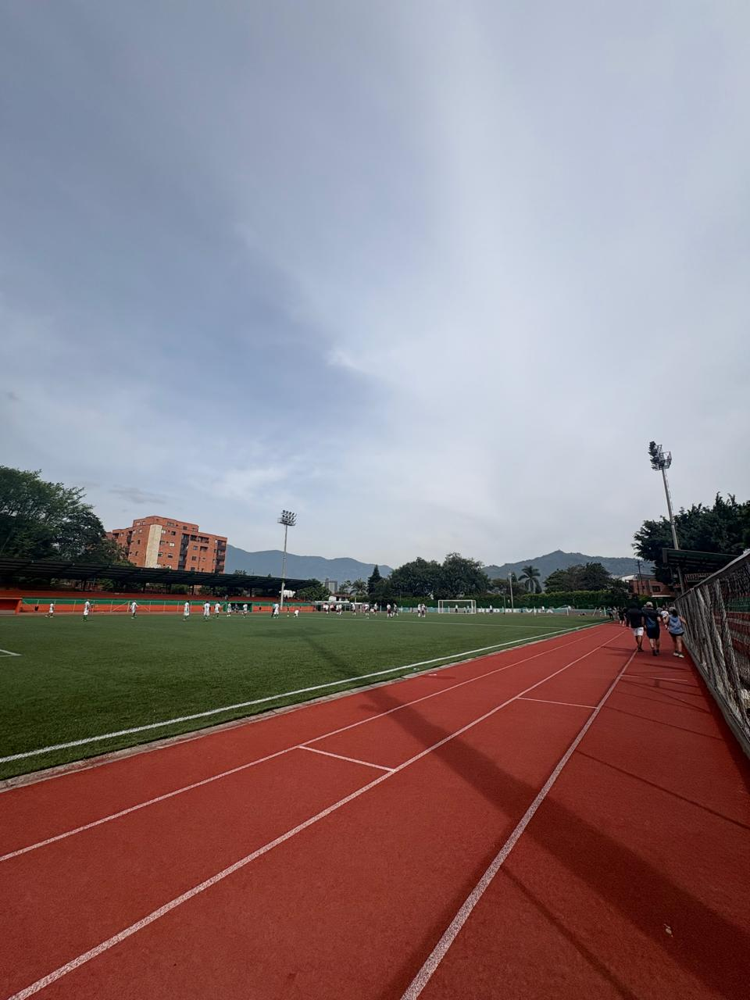
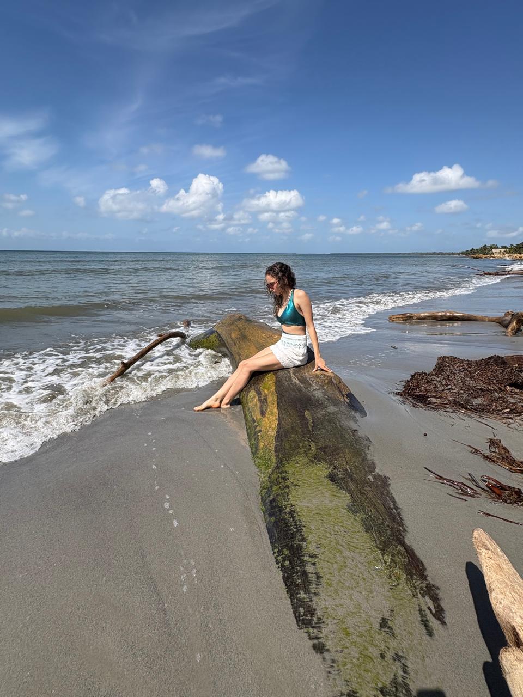
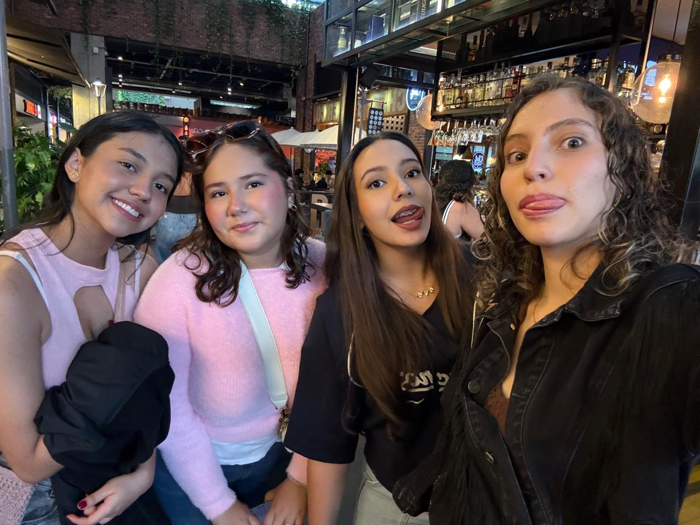
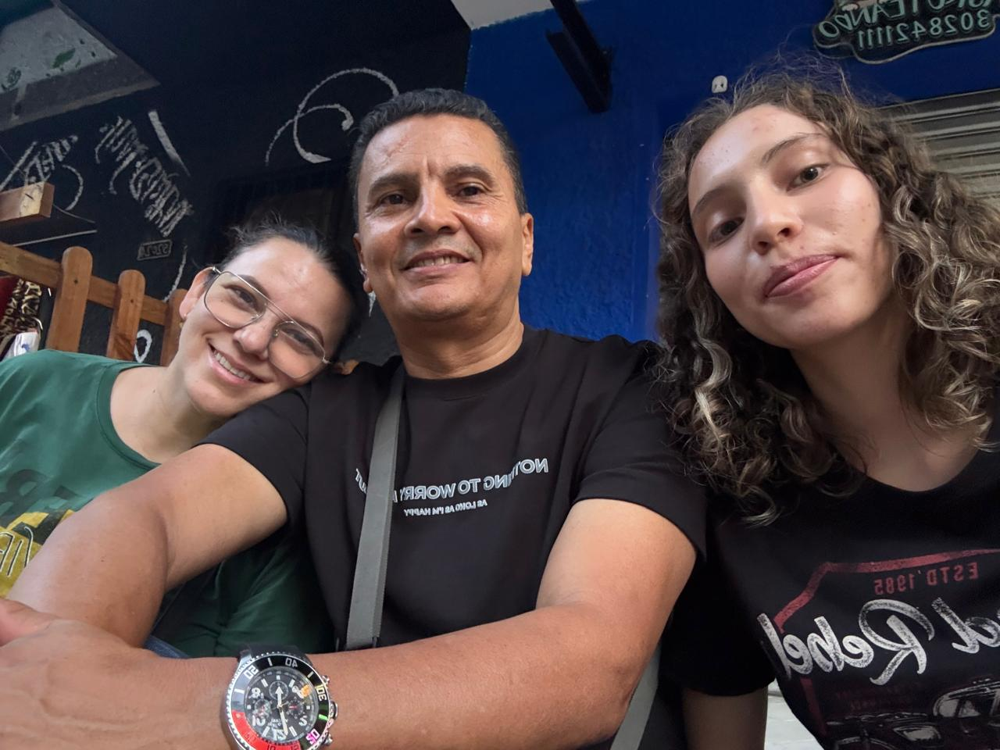
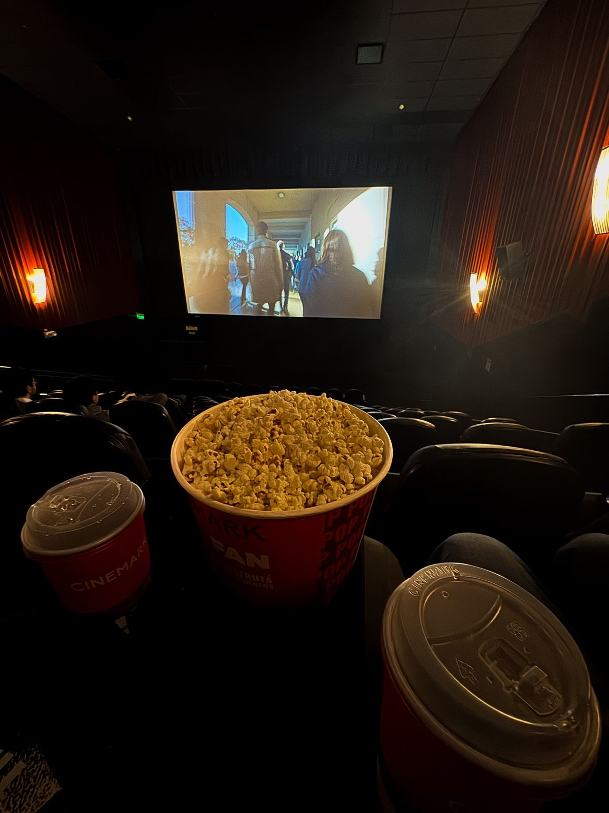
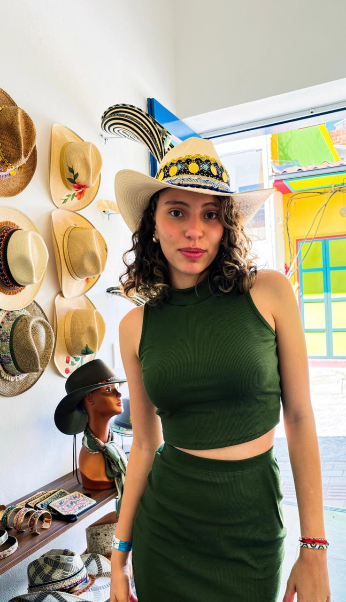

🏃🏻♀️
Deporte
Me gusta disfrutar de los diferentes deportes, aunque siempre me ha atraido mucho el running, siento que es parte de mi vida el correr y me es liberador.

Aunque vaya a hacer de la programación mi vida, no es lo único que realmente me mueve.
Me gusta disfrutar de los diferentes deportes, aunque siempre me ha atraido mucho el running, siento que es parte de mi vida el correr y me es liberador.

Junto a mi familia y amigos he viajado. Gracias a ello he conocido maravillosos lugares y he aprendido que la mejor manera de capturar los bellos momentos es a través de una buena fotografía.

Valoro las mujeres que me rodean y que son sumamente importantes para mi, mis amigas son grandes personas que me han enseñado las diferentes perspectivas de vida y un cariño cercano, por ello, disfruto pasar tiempo con ellas.

Mi familia es parte importante de mi vida, ya que me han apoyado en las diferentes decisiones que he tomado en esta. Adoro a mi papá por su manera de ser y sin duda es una de mis personas favoritas.

Para mi, estos dos pueden llegar a contar diferentes realidades y por ello les he dado un buen tiempo de mi vida, la cinematografía ha sido una importanta para descubrir quién soy y que me gusta, asi mismo los libros me han llevado a explorar realidades que me mantienen entretenida y me hacen feliz.

Considero importante aquellas cosas que dia a dia me hacen feliz, sin mucho tiempo y sin mucho esfuezo pero que me hacen feliz; vivir para servir es una de ellas, acariciar algún gato o perro aunque sea alergica, pararme a ver un atardecer y hablar con Dios cuando vaya a dormir. Son aquellas cosas que aunque pequeñas llegan a mi corazón.
